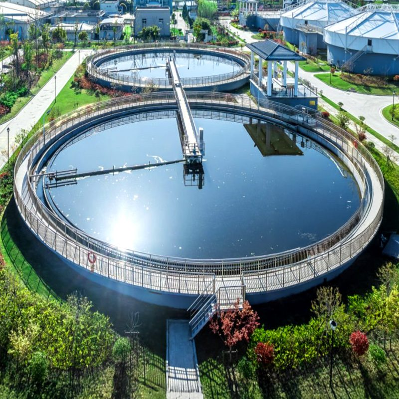

01
Water & wastewater
Our oldest market and still our deepest. Chlorine, hypochlorite, alum, caustic, and ferric chloride each eat a different material, so we pick pipe zone by zone, from intake to discharge. Anything that touches drinking water comes NSF-61 certified (the standard that proves a part will not leach into potable water).
- PVC and CPVC, NSF-61 certified for potable contact
- PVDF and polypropylene dosing lines for hypochlorite and acids
- FRP for aeration and large-diameter structural runs
- True union ball, butterfly, and diaphragm valves
- pH, ORP, flow, and level instrumentation
- Metering, centrifugal, and peristaltic pumps
Serving Municipal plants · Industrial water · Contractors · EPCs · OEMs
